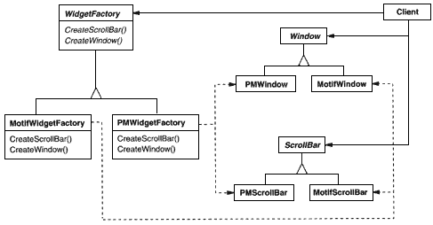
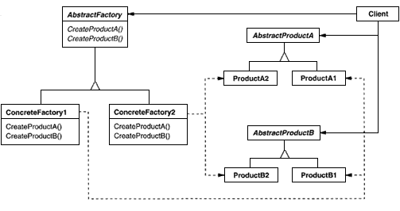

make: partName
^ (partCatalog at: partName) copy
addPart: partTemplate named: partName
partCatalog at: partName put: partTemplate
aFactory addPart: aPrototype named: #ACMEWidget
make: partName
^ (partCatalog at: partName) new
class MazeFactory {
public:
MazeFactory();
virtual Maze* MakeMaze() const
{ return new Maze; }
virtual Wall* MakeWall() const
{ return new Wall; }
virtual Room* MakeRoom(int n) const
{ return new Room(n); }
virtual Door* MakeDoor(Room* r1, Room* r2) const
{ return new Door(r1, r2); }
};
Maze* MazeGame::CreateMaze (MazeFactory& factory) {
Maze* aMaze = factory.MakeMaze();
Room* r1 = factory.MakeRoom(1);
Room* r2 = factory.MakeRoom(2);
Door* aDoor = factory.MakeDoor(r1, r2);
aMaze->AddRoom(r1);
aMaze->AddRoom(r2);
r1->SetSide(North, factory.MakeWall());
r1->SetSide(East, aDoor);
r1->SetSide(South, factory.MakeWall());
r1->SetSide(West, factory.MakeWall());
r2->SetSide(North, factory.MakeWall());
r2->SetSide(East, factory.MakeWall());
r2->SetSide(South, factory.MakeWall());
r2->SetSide(West, aDoor);
return aMaze;
}
class EnchantedMazeFactory : public MazeFactory {
public:
EnchantedMazeFactory();
virtual Room* MakeRoom(int n) const
{ return new EnchantedRoom(n, CastSpell()); }
virtual Door* MakeDoor(Room* r1, Room* r2) const
{ return new DoorNeedingSpell(r1, r2); }
protected:
Spell* CastSpell() const;
};
Wall* BombedMazeFactory::MakeWall () const {
return new BombedWall;
}
Room* BombedMazeFactory::MakeRoom(int n) const {
return new RoomWithABomb(n);
}
MazeGame game;
BombedMazeFactory factory;
game.CreateMaze(factory);
createMaze: aFactory
| room1 room2 aDoor |
room1 := (aFactory make: #room) number: 1.
room2 := (aFactory make: #room) number: 2.
aDoor := (aFactory make: #door) from: room1 to: room2.
room1 atSide: #north put: (aFactory make: #wall).
room1 atSide: #east put: aDoor.
room1 atSide: #south put: (aFactory make: #wall).
room1 atSide: #west put: (aFactory make: #wall).
room2 atSide: #north put: (aFactory make: #wall).
room2 atSide: #east put: (aFactory make: #wall).
room2 atSide: #south put: (aFactory make: #wall).
room2 atSide: #west put: aDoor.
^ Maze new addRoom: room1; addRoom: room2; yourself
make: partName
^ (partCatalog at: partName) new
createMazeFactory
^ (MazeFactory new
addPart: Wall named: #wall;
addPart: Room named: #room;
addPart: Door named: #door;
yourself)
createMazeFactory
^ (MazeFactory new
addPart: Wall named: #wall;
addPart: EnchantedRoom named: #room;
addPart: DoorNeedingSpell named: #door;
yourself)